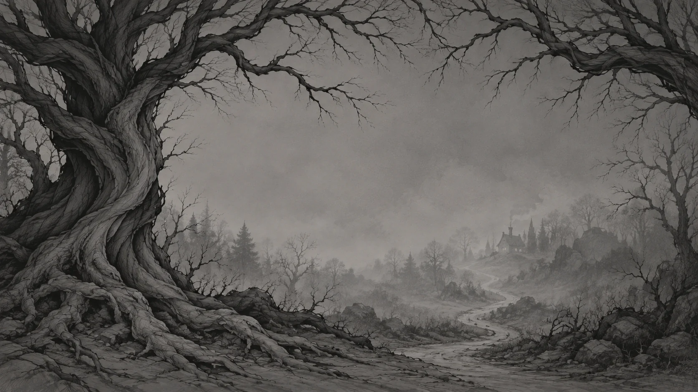
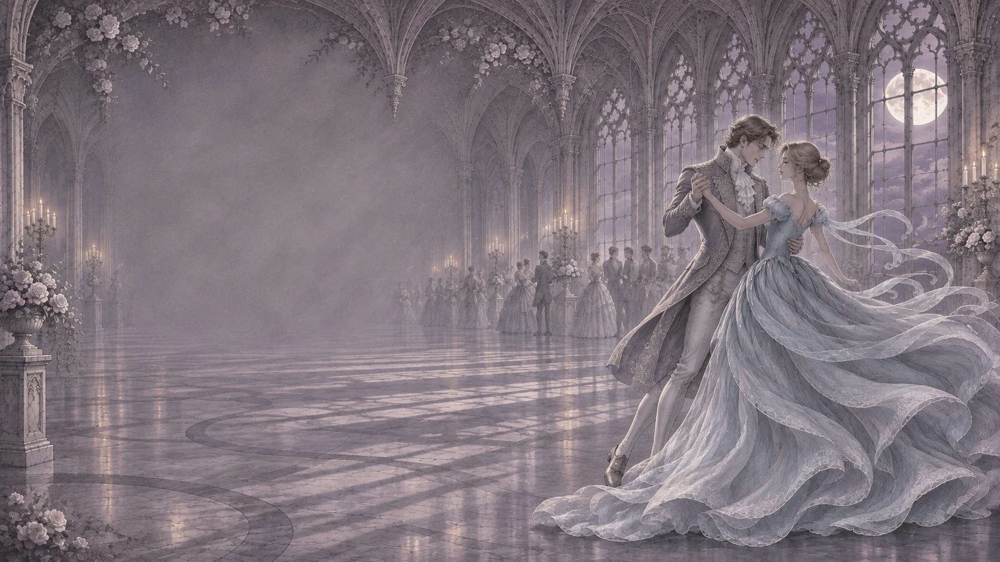
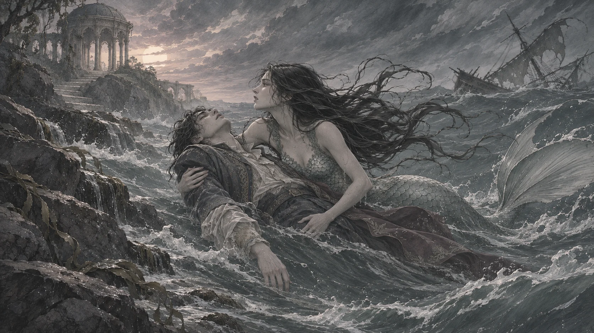
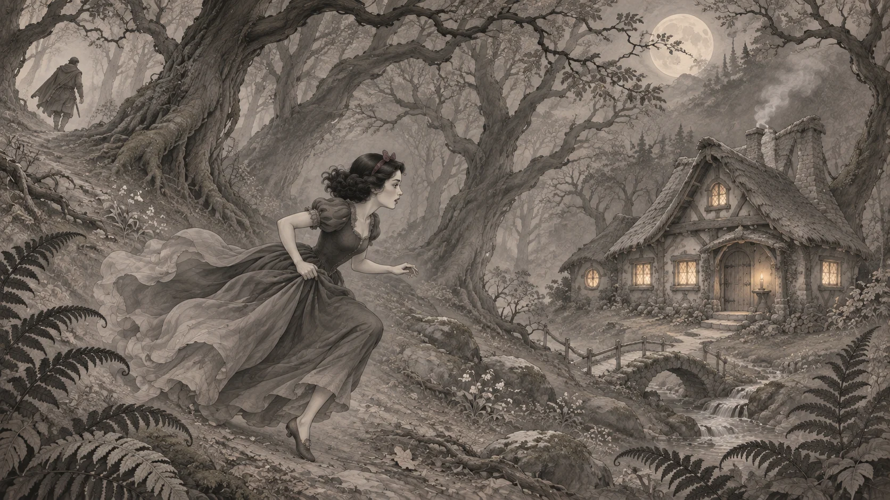

바탕화면의 web2 실행.cmd를 더블클릭하면 사이트가 열립니다.
Every tale leaves something untold
모든 이야기에는 끝내 말하지 않은 것이 있다

어릴 적 읽었던 네 편의 동화에는 기억보다 어두운 장면들이 남아 있습니다Dark Fairy Tale은 그 장면을 다시 펼쳐, 익숙한 결말에 가려졌던 인물들의 선택을 따라갑니다
이야기가 끝났다고 말할 수 있는 건 누구일까요?
신데렐라는 재 속에서 새로운 삶을 꿈꾸고, 빨간모자는 숲에서 낯선 목소리를 만납니다인어공주는 다른 세계를 향해 목소리를 내어주고, 백설공주는 거울이 정한 아름다움 때문에 숲으로 쫓겨납니다
같은 이야기를 다른 인물의 눈으로 본다면, 누구의 선택이 달라 보일까요?



숲을 스크롤해 책을 고르고, 장면 속 사물을 클릭하거나 드래그해 반응을 살펴보세요Archive에서는 카드를 넘기다가 원하는 장면을 바로 열 수 있습니다
내 손으로 장면을 움직일 때, 나는 여전히 이야기 바깥에 있을까요?